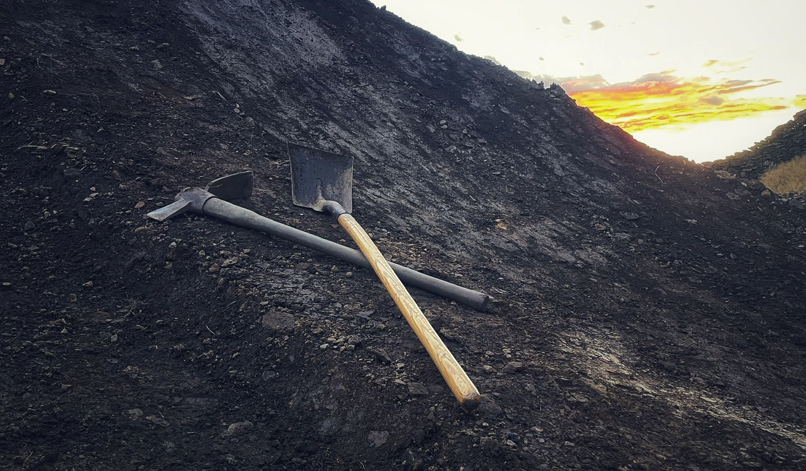

Fancy a Dig?

Are you ready to get your hands dirty and join the Havok family? We’re on the hunt for passionate, dedicated folks who live for bikes, dirt, and good times—people who share our love for riding and trail building at Havok Bike Park.
Click HERE to fill out our application form and let us know why you’d be a great addition to our team.
We’re excited to announce our upcoming series of Dig Days at Havok Bike Park. These special volunteer days offer you the perfect chance to jump into the action—helping shape and maintain the trails you love to ride. Since Dig Days will mostly take place on weekends when the park is closed due to weather, it’s an ideal time to work on trail improvements without disrupting riding time.
Come along, get your hands dirty, and be part of the vibrant Havok community!
Keep an eye on our socials for the latest updates on upcoming Dig Days—hang out with us, get muddy, and help us keep Havok rolling strong.